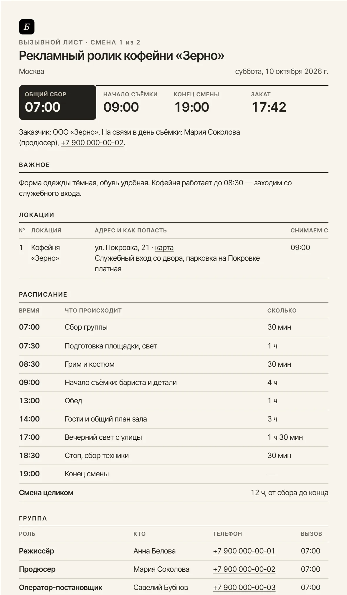

Вызывной лист (call sheet): шаблон и образец онлайн Смена на одном листе — со светом
Вызывной лист (call sheet) — это план одного съёмочного дня, который группа получает накануне: время сбора, адреса, телефоны. Здесь он собирается онлайн: расписание, локации с картой, закат и золотой час для вашей даты — и уходит каждому личным сообщением, чтобы утром никто не звонил с вопросом «а где мы снимаем».
Черновик восстановлен из памяти браузера — продолжайте с того же места.
Лист сохраняется в этом браузере сам. Телефоны и адреса остаются на вашем устройстве: страница их никуда не отправляет, мессенджер и карты открываются уже у вас. В сеть уходят только координаты точки — и только по кнопке прогноза.
Что должно быть в вызывном листе
Вызывной лист рассылают группе накануне вечером, и работает он ровно до тех пор, пока в нём есть четыре вещи: время (общий сбор, начало съёмки, обед, конец смены), адреса локаций с указанием, во сколько где снимаем и как туда попасть, люди — кто, к какому времени приезжает и по какому телефону его искать, и заметки площадки: парковка, шлагбаум, питание, форма одежды.
Пятая вещь, которую в шаблонах обычно забывают, — свет. Смена, свёрстанная без оглядки на закат, разваливается на последнем блоке: группа приезжает на натуру, а солнце уже село. Поэтому здесь восход, закат, золотой и синий час считаются автоматически по дате и координатам, а лист сам предупреждает, если съёмка заканчивается после заката или если золотой час попадает внутрь смены — на него стоит поставить ключевые кадры.
Остальное включается по необходимости: кто в кадре и к какому времени готов, что снимаем по сценам, транспорт, питание, техника, связь, план на случай дождя и адрес ближайшего травмпункта. На листе появляется только то, что вы включили, — у съёмки втроём он остаётся коротким. Прогноз на часы смены подтягивается кнопкой, под адресом встаёт QR-код маршрута, в угол — логотип продакшна.
Образец вызывного листа
Так выглядит заполненный лист на один день рекламной съёмки. Сверху то, что ищут глазами в первую очередь: общий сбор, начало, конец смены и закат. Ниже — адрес со ссылкой на карту и кодом маршрута для тех, у кого лист на бумаге, расписание с длительностью каждого блока и группа, где у каждого своё время вызова.

Образец текстом — лист рекламной съёмки на один день. Его можно взять за основу, если вызывной собирается в таблице или прямо в чате:
| Блок листа | Что написано в образце |
|---|---|
| Шапка | Рекламный ролик кофейни «Зерно», смена 1 из 2, суббота, Москва. Общий сбор 07:00, начало съёмки 09:00, конец смены 19:00 — смена 12 часов. |
| На связи | Продюсер с телефоном — человек, которому звонят, если опаздывают или не могут найти вход. |
| Важное | Форма одежды тёмная, обувь удобная. Кофейня работает до 08:30 — заходим со служебного входа. |
| Локация | Кофейня «Зерно», ул. Покровка, 21, с 09:00. Служебный вход со двора, парковка на Покровке платная. Рядом ссылка на карту и QR-код маршрута. |
| Расписание | 07:00 сбор группы · 07:30 подготовка площадки, свет · 08:30 грим и костюм · 09:00 начало съёмки: бариста и детали · 13:00 обед · 14:00 гости и общий план зала · 17:00 вечерний свет с улицы · 18:30 стоп, сбор техники · 19:00 конец смены. |
| Группа | Режиссёр, продюсер и оператор-постановщик — к общему сбору в 07:00. Гафер — 07:00, гримёр — 08:15, звукорежиссёр — 08:30. У каждого имя и телефон. |
| В кадре | Бариста: вызов в 08:30, в кадре с 09:00. |
| Свет и погода | Восход, закат и золотой час на дату и город. Прогноз на часы смены: +9…+14, без осадков, ветер 3 м/с. |
| Питание | Обед в 13:00 в зале кофейни на семь человек. Вода и кофе с утра. |
| Безопасность | Экстренные службы — 112. Ближайший травмпункт с адресом. |
Как разослать вызывной лист группе
Кнопка «Отправить группе» собирает два текста. Общий — для чата смены: всё с листа обычным сообщением, которое читается в мессенджере без вложений. Личный — каждому свой: имя, его время вызова, адрес и ссылка на карту. У кого записан телефон, тому вызов открывается сразу в WhatsApp; для Telegram текст кладётся в буфер, и открывается чат с этим человеком.
Рядом с каждым именем — отметка «отправлено» и «подтвердил»: видно, кто ещё не ответил, и тут же собирается напоминание. Если после рассылки что-то сдвинулось, лист сам перечислит изменения — «сбор: 07:00 → 07:30», «новый адрес» — и соберёт из них короткое сообщение, чтобы не пересылать всё заново. Для заказчика есть версия без телефонов группы.
Золотой час, синий час и сумерки
Золотой час — время, когда солнце стоит между −4° и +6° над горизонтом: свет мягкий, тёплый, тени длинные. Синий час — от −6° до −4°: солнце уже за горизонтом, небо ровное и холодное, в кадре хорошо читаются окна и вывески. Гражданские сумерки заканчиваются на −6°: после этого без своего света снимать нечего.
Продолжительность зависит от широты и сезона: в Москве в июне золотой час тянется больше часа, а в марте укладывается в сорок минут. Инструмент считает это для вашей даты, поэтому «золотой час» перестаёт быть фигурой речи и превращается в строку расписания.
Дальше по работе: бриф на съёмку соберёт вводные у клиента, шот-лист разложит смену по кадрам — его сцены подтягиваются в этот лист одной кнопкой, чек-лист сборов проследит, чтобы техника доехала, калькулятор ГРИП подскажет, что попадёт в резкость, тайминг свадебного дня соберёт расписание свадьбы, калькулятор ставки и смета со счётом переведут смены в деньги, а конструктор договоров закрепит условия на бумаге.
Частые вопросы про вызывной лист
Что такое вызывной лист и зачем он нужен?
Вызывной лист (call sheet) — это лист на один съёмочный день, который рассылают группе накануне вечером. В нём время сбора и выезда, адреса локаций, кто во сколько приезжает, телефоны и важные заметки по площадке. Смысл простой: утром никто никому не звонит с вопросом «а где мы снимаем и во сколько».
Как выглядит вызывной лист?
Это одна страница на один съёмочный день. Вверху — проект, дата и крупно общий сбор; дальше локации с адресами, расписание по времени и таблица группы: роль, имя, телефон, время вызова. Образец заполнения есть выше на этой странице, а кнопка «Показать на примере» откроет его в конструкторе.
Чем вызывной лист отличается от шот-листа?
Шот-лист отвечает на вопрос «что снимаем» — список кадров с крупностями и движением камеры. Вызывной лист отвечает на вопрос «когда и где» — время, адреса, люди, телефоны. На площадке нужны оба: один у оператора, другой у всей группы.
Что такое вызывной лист в кино?
В кино вызывной лист составляет второй режиссёр по съёмочному плану: в нём стоит официальное время вызова цехов и актёров, сцены дня и объекты. На небольшой съёмке лист проще, а собирает его тот, кто организует день, — продюсер, режиссёр или сам оператор. Смысл один: каждый знает, куда и к какому времени приехать.
Что такое wrap в вызывном листе?
Wrap — конец съёмочной смены: снят последний кадр дня, группа начинает собираться. В русских листах пишут «конец смены» или «стоп». Здесь это последняя строка расписания: от общего сбора до неё считается длительность смены.
Как указать обед в вызывном листе?
Отдельной строкой расписания со временем начала: «13:00 — Обед». Сколько он длится, лист посчитает сам по следующей строке. Если общей паузы не будет и группа ест по очереди, так и напишите в строке: «скользящий обед, съёмка не останавливается» — тогда никто не ждёт перерыва.
Как отправить вызывной лист группе?
Кнопкой «Отправить группе». Общий текст копируется в чат смены или уходит через Telegram и WhatsApp. Личный вызов собирается для каждого: имя, своё время, адрес и ссылка на карту. Там же отмечается, кому отправлено и кто подтвердил, а после правок собирается сообщение «что изменилось».
Можно ли скачать вызывной лист в Word, PDF или Excel?
Да, бесплатно и без регистрации. Word — настоящий файл .docx, который правится дальше. PDF — кнопкой «Печать и PDF»: лист ложится на А4 без лишних страниц. Excel — таблица с расписанием, локациями и группой. Ещё есть файл для календаря: событие с адресом и напоминанием за час до сбора.
Как сделать вызывной лист на несколько смен?
Соберите первую смену, сохраните её в Word или кнопкой «Ссылка на лист» и нажмите «Следующая смена»: группа, локации и расписание останутся, дата сдвинется на день, номер смены вырастет, отметки о рассылке сбросятся. В браузере хранится один лист, поэтому готовую смену стоит сохранить до перехода к следующей.
Откуда берётся время заката и золотого часа?
Считается прямо в браузере по формулам солнечного калькулятора NOAA для координат выбранного города и указанной даты. Золотой час — период, когда солнце стоит между −4° и +6° над горизонтом, синий час — от −6° до −4°. Точность около минуты, интернет для расчёта не нужен.
Можно ли поставить свои координаты, если города нет в списке?
Да. В списке больше ста тридцати городов, они подставляют широту, долготу и часовой пояс сами. Для загородной локации скопируйте точку из карт и вставьте её в поле широты целиком — вторая половина сама уедет в долготу. Расчёт пересчитается сразу.
Откуда берётся прогноз погоды?
Из открытых данных норвежского метеоинститута MET Norway (лицензия CC BY 4.0) — на девять дней вперёд. Кнопка «Подтянуть прогноз» считает температуру, осадки и ветер за часы вашей смены и вписывает строку в лист; её можно поправить руками. В сервис уходят только координаты точки, больше ничего.
Зачем на вызывном листе QR-код?
Чтобы с бумажного листа или PDF открыть маршрут одним движением: камера телефона читает код и показывает адрес локации на карте. Код строится в браузере из адреса, включается и выключается чипом «QR маршрута». Рядом можно поставить логотип продакшна — он попадает в печать и в Word.
Данные группы никуда не уходят?
Нет. Телефоны и адреса остаются в вашем браузере: страница их никуда не отправляет. Лист, логотип и запомненные имена хранятся только на вашем устройстве и стираются кнопками «Очистить лист», «Убрать логотип» и «Забыть всех». Когда вы нажимаете WhatsApp или Telegram, текст уходит в мессенджер так же, как если бы вы вставили его сами. Единственный запрос в сеть — прогноз погоды по вашей кнопке: в нём только координаты точки.
Что ещё пригодится
- Шот-лист — разложить съёмку по кадрам и проверить, влезает ли план в смену.
- Чек-лист съёмки — проверить по списку, что техника собрана и доехала.
- Модельный релиз — согласие героя на съёмку и публикацию.
- Согласие на съёмку ребёнка — подпись родителя, если в кадре дети: школа, сад, студия.
- Договор аренды техники — если берёте или сдаёте камеру, оптику и свет.
- Тайминг свадьбы — расписание свадебного дня по часам с закатом.